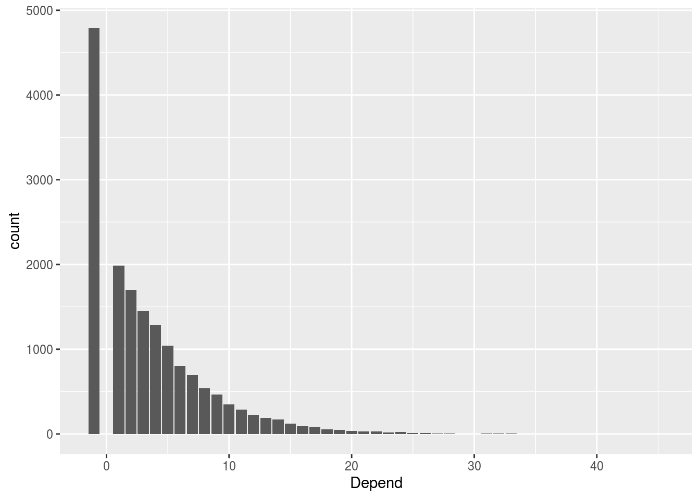

Rmarkdown
Kirill
2020-11-16
TL;DR
Introduction
outcome:
- learn how to create and share Rmarkdown document
- learn various document type, e.g html, pdf and docx
learn to fly the rocket!
The bottom line is - I would like to learn Rmarkdown!
Like seriously become good at it !
Task list for today
- Get aspired to learn Rmarkdown
- Get to know three core components of the Rmarkdown document (header, body, R chunks)
- Practice, practice !
Code
You can use single backtick on each side of the code for inline code or triple backticks for standalone code block
#!/bin/bash
echo "Why am I doing BASH in this course?"
Rscript --vanilla run_away.RMath
This is a covariance equation, random variable \(X\) co-variace with random variable \(Y\), where \(\bar{X} = mean(X)\) and \(\bar{Y} = mean(Y)\) and \(N\) is a size of a random sample from the population.
\[cov(X,Y) = \frac{\sum(X_{i}-\bar{X})(Y_{i}-\bar{Y})}{N-1}\]
Images

R code
Getting and wrangling the data
make_url <- function(package) {
paste0('<a href="https://cran.r-project.org/web/packages/', package, '">', package, '</a>')
}
library(magrittr)
library(dplyr)
avail_packages <- available.packages(contriburl = contrib.url("https://mirror.aarnet.edu.au/pub/CRAN/")) %>%
as.data.frame() %>%
as_tibble() %>%
rowwise() %>%
mutate(Depend = length(unlist(strsplit(Imports, split = ",")))) %>%
ungroup() %>%
select(Package, Version, Depend, Imports, License) %>%
mutate(Package = make_url(Package),
Depend = ifelse(is.na(Imports), -1, Depend)) Displaying table
library(DT)
avail_packages %>% datatable(escape = FALSE)Plot the data
library(ggplot2)
avail_packages %>% ggplot(aes(Depend)) + geom_bar()